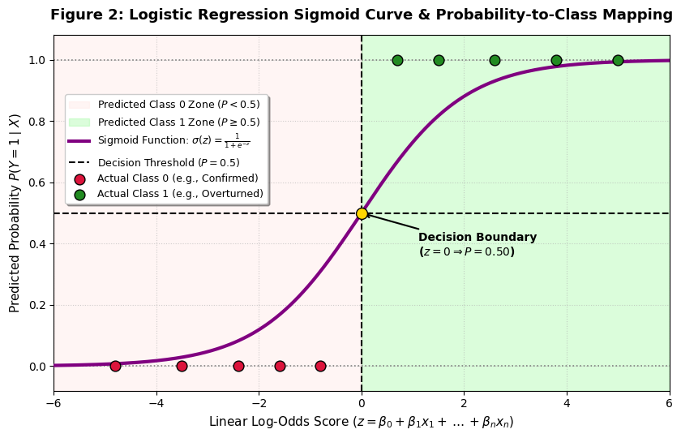
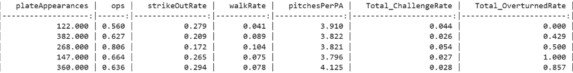

Regression Overview
Regression is a foundational family of supervised machine learning algorithms designed to model the mathematical relationship between independent input features (\(X\)) and a target outcome variable (\(Y\)). Depending on whether the target variable is a continuous numerical measurement or a discrete categorical label, predictive modeling pipelines utilize either Linear Regression or Logistic Regression. Within ABS analytics, pairing both techniques enables a two-tiered investigation: evaluating whether season-long hitting metrics explain continuous player challenge rates, while simultaneously predicting discrete pitch-by-pitch review decisions and officiating overturns.
Linear Regression
Linear Regression predicts a continuous numerical target variable by fitting a straight hyperplane through the feature space. For a dataset with multiple independent features, the predicted continuous value \(\hat{y}\) is expressed as a linear weighted sum:
Where \(\beta_0\) is the y-intercept, \(x_1, \dots, x_n\) represent input features, and \(\beta_1, \dots, \beta_n\) denote the coefficients quantifying how much \(\hat{y}\) changes per one-unit increase in each feature (holding all other features constant).
To determine the optimal line of best fit, Ordinary Least Squares (OLS) minimizes the vertical distances—known as residuals (\(e_i = y_i - \hat{y}_i\))—between the actual observed data points and the predicted regression line. Specifically, the algorithm minimizes the Residual Sum of Squares (RSS) across all training observations, as illustrated in Figure 1:
Residual Sum of Squares (RSS) Objective
Squaring each residual penalizes large prediction errors heavily and guarantees a single global minimum for the best-fit parameters.

Logistic Regression
Logistic Regression is a supervised classification algorithm used when the target variable is binary (such as Challenged vs. Not Challenged or Overturned vs. Confirmed). Rather than predicting an unbounded continuous number, Logistic Regression first computes a linear log-odds score \(z\) and passes it through the non-linear Sigmoid function. This curve squashes any real-valued input into a bounded probability between \(0\) and \(1\), as shown in Figure 2:
Logistic Sigmoid Function
By default, observations with a predicted probability \(P(Y = 1 \mid X) \geq 0.5\) (corresponding to \(z \geq 0\)) are assigned to the positive class, while values below \(0.5\) are assigned to the negative class.
Instead of minimizing squared residuals, Logistic Regression optimizes its weights using Maximum Likelihood Estimation (MLE). Furthermore, exponentiating any learned feature coefficient (\(e^{\beta_j}\)) yields an interpretable Odds Ratio, indicating how the odds of the positive outcome multiply for each unit increase in that feature.

Application to the ABS Challenge Research Project
Within this study, regression modeling is applied across both season-level player aggregates and pitch-by-pitch tracking telemetry:
-
Linear Regression (Season-Level Hitter Rates): Evaluates all combinations of five season-level batting metrics (
plateAppearances,ops,strikeOutRate,walkRate, andpitchesPerPA) using 5-fold cross-validation to determine whether general offensive production, increased playing time, and plate discipline predict a batter's cumulative ABS Challenge Rate or ABS Overturn Rate. - Logistic Regression (Pitch-by-Pitch Classification): Evaluates the exact same four binary classification tasks established in earlier models—Batter Challenge Intent, Batter Challenge Outcome, Defense Challenge Intent, and Defense Challenge Outcome—enabling a direct comparison against the feature-independent Hybrid Naive Bayes models.
Data Prep
Because Linear Regression and Logistic Regression solve fundamentally different mathematical objectives, separate data preparation workflows were constructed for them. Across both workflows, all datasets were partitioned into strictly disjoint Training (80%) and Holdout Testing (20%) splits prior to feature selection or hyperparameter tuning to eliminate data leakage.
1. Linear Regression Data Preparation (Season-Level Hitter Aggregates)
To evaluate whether cumulative offensive performance explains a batter's challenge tendencies, season-level ABS situational splits were inner-joined with 2026 regular season batting statistics using their unique player ids. Three normalized rate metrics were engineered to capture plate discipline and at-bat length independent of total playing time:
-
Strikeout Rate (
strikeOutRate): Computed as total strikeouts divided by total plate appearances (strikeOuts / plateAppearances). -
Walk Rate (
walkRate): Computed as total walks divided by total plate appearances (baseOnBalls / plateAppearances). -
Pitches Per Plate Appearance (
pitchesPerPA): Computed as total pitches seen divided by total plate appearances (numberOfPitches / plateAppearances).
To eliminate small-sample volatility in continuous target rates, hitters with fewer than 100 plate appearances and rows with missing target values were filtered out. This yielded a clean dataset of 425 qualified hitters (340 training rows and 85 testing rows) across five continuous candidate predictors: plateAppearances, ops, strikeOutRate, walkRate, and pitchesPerPA.

Total_ChallengeRate and Total_OverturnedRate targets.2. Logistic Regression Data Preparation (Pitch-by-Pitch Classification)
For binary classification, the pitch-by-pitch batter and defensive datasets were prepared using the same supervised target labels established in prior modules: Challenged (1) vs. Not Challenged (0) for challenge intent tasks, and Overturned (1) vs. Confirmed (0) for challenge outcome tasks.
-
Data Leakage Prevention on Outcome Models: While all 14 engineered spatial and situational features were retained for predicting challenge intent, the three strike-zone coordinate margins (
plateTimeX,plateTimeY_topDiff, andplateTimeY_BotDiff) were strictly excluded from the outcome models. Because Hawk-Eye arbitration relies directly on those coordinates, removing them ensures the models evaluate whether situational context alone predicts overturn likelihood. -
Feature Standardization (
StandardScaler): For Logistic Regression, features measured on vastly different numerical scales (such as pitch velocity in miles per hour versus binary baserunner flags) receive uneven regularization penalties. Therefore, all numeric features were standardized to zero mean and unit variance inside a Scikit-LearnPipelineso scaling parameters were learned strictly within each cross-validation training fold. -
Class Imbalance Correction: To prevent the heavily skewed challenge intent models (~95.6% unchallenged for batters and ~97.6% unchallenged for defense) from collapsing into majority-class predictions,
class_weight="balanced"was applied during training, while the naturally balanced outcome models used unweighted empirical distributions.
Todo: Add screenshot of dataset before standardization as Figure 4
Todo: Add links to download CSV files from GitHub